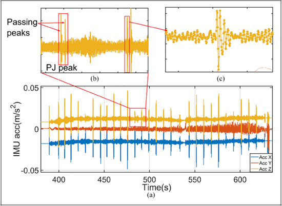

|
I am a Lecturer (2024.09-) in the School of Civil and Transportation Engineering at Ningbo University of Technology. I completed my D.Phil degree (2019.09-2024.06) in the College of Civil and Transportation Engineering at Shenzhen University, supervised by Prof. Qingquan Li, the academician of the Chinese Academy of Engineering. In my D.Phil study, My research focuse on the internal deformation measurement of rockfill dams, i have participated in the internal deformation monitoring projects of multiple ultra-high rockfill dams, and i worked with Dr. Zhipeng Chen. In my M.Phil study, I mainly engage in multi-sensor integration and synchronizations, FPGA development and application, supervised by Assoc. Prof. Xiaoyu Chen. In my undergraduate study, I mainly engage in the development of circuit systems and PCB layout, under supervision of Lecturer Yansheng Li, i have participated in several students' competitions and won awards, and completed my undergraduate thesis. Email / Google Scholar / ResearchGate / Github/ Orcid |
 |
|
My research specializes in infrastructure deformation monitoring, addressing the challenges of achieving high-velocity, comprehensive, and ultra-precise measurements in deformation monitoring, via establishing theoretical methodologies for dynamic precision engineering measurement, designing self-developed measurement instrumentation, providing practical solutions to real-world engineering problemsin the fields of Surveying and Mapping, Civil and Hydraulic Engineering, etc. My work is devoted to achieving rapid, comprehensive, non-destructive, and high-precision deformation measurement for Civil and Hydraulic Engineering infrastructure through the integration of advanced perception technologies, including Sensors (IMU/Camera/Lidar/OD/GNSS etc.), Internet of Things (IoT), Robotic Systems (Quadrupedal/Humanoid Robots, etc.), Unmanned Aerial Vehicles (UAVs) and Artificial Intelligence (AI), ensuring dependable full-lifecycle structural health assessment. With specific focus on the following specialized research domains:
Researchers and students working in related fields are encouraged to contact me for scholarly discussions and potential cooperation! |
|
| ||||
| 2019.09 - 2024.06 | Shenzhen University | Civil Engineering | Ph.D | |
| 2016.09 - 2019.06 | Central China Normal University | Circuits and Systems | M.E | |
| 2012.09 - 2016.06 | Hubei Normal University | Electronic Information Engineering | B.E |
[2025.04.29] Two undergraduate students I supervised passed their degree defenses. [2024.09.19] I joined NBUT. [2024.05.19] I passed the doctoral dissertation defense. |
|
We developed a high-precision measuring system for monitoring the deformation of pipelines in rockfill dams. |
We present an innovative approach to measure internal deformation in rockfill dam via high-precision flexible pipeline measurements. |
We proposes a rapid and precise measurement method based on IMU/odometer aided by multiple total stations. |
We propose a data-driven implicit calibration method for underwater stereo cameras. |
 |
We propose a mileage correction method based on junction detection to improve the accuracy of pipeline inertial measurement for better dam internal deformation monitoring. |
| Engineering Structures | Reviewer |
| IEEE Robotics and Automation Magazine | Reviewer |
|
Fall, 2025: Intelligence Sensors and Information Fusion, Undergraduate. Spring, 2026: Smart Geomatics and Multi-source Fusion Perception, Undergraduate. |
| Master: | None | |
| Undergraduate: | ||
| Year | Student | Work |
| 2025 | Quanyao Zhang (张权垚) | Startup Founder |
| 2025 | Yanhao Wang (王炎豪) | Structural Engineer |